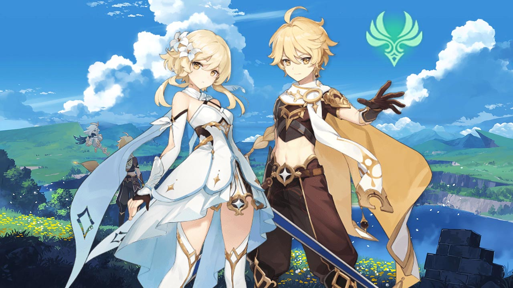
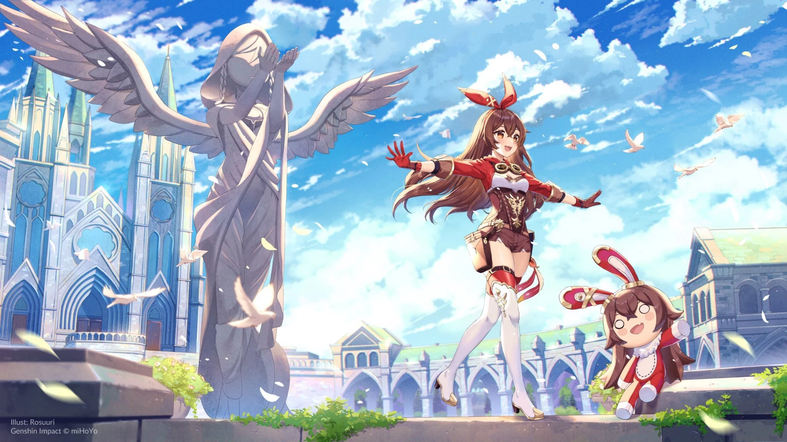
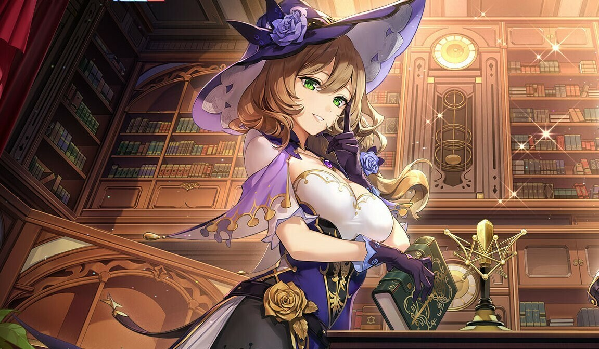
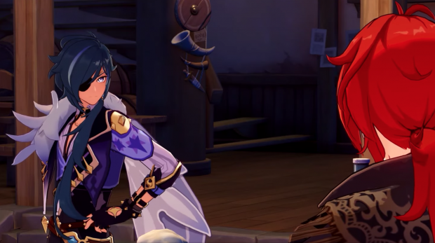

Genshin Impact
Synopsis
L'histoire débute avec deux jumeaux faisant face à une
déesse. A l'issue de cet affrontement, le jeu vous
propose d'incarner soit la fille soit le garçon. Suite à
cela, la déité vous sépare et vous plonge dans un
profond sommeil. À votre réveil, le monde n'est plus
celui que vous connaissiez... Ainsi, vous allez devoir
explorer le vaste monde de Teyvat à la recherche de
votre frère/sœur disparu(e).
Bande Annonce Du jeu
Personnages
-  Voyageur/voyageuse : Protagoniste jouable de Genshin Impact. Au début du jeu, les deux sexes sont des frères et sœurs jumeaux d'un autre monde, voyageant à travers l'univers, jusqu'à ce qu'un dieu inconnu bloque et capture l'un d'eux, et scelle leur pouvoir de voyager, les laissant bloqués sur Teyvat. Ils sont accompagnés d'un compagnon de voyage nommé Paimon tout au long de leur voyage.
-  Amber : fille pleine de vie et l'unique éclaireuse de l'Ordre de Favonius. Avec trois titres consécutifs de championne de planement aérien de Mondstadt, cette discipline n'a plus de secret pour elle. En tant qu'étoile montante de l'Ordre de Favonius, Amber brille toujours en première ligne!
-  Lisa : sorcière intelligente avec un penchant pour la sieste. En tant que bibliothécaire de l'Ordre de Favonius, cettte grande intellectuelle trouve toujours la meilleure solution à tous les problèmes.
-  Kaeya : Fidèle bras droit de Jean au sein de l'Ordre de Favonius. Il n'y a rien qu'il ne puisse pas faire! Ce charmant chevalier est très apprécié de la population locale, mais il n'en demeure pas moins mystérieux.
-
 Jean : grande maitresse intérimaire de l'Ordre de
Favonius, Jean veille sans relâche sur Mondstadt.
Bien qu'elle n'était pas la plus douée de ses pairs,
cette jeune femme est devenue le pilier de l'Ordre
grâce à son travail acharné. Elle protégera
Mondstadt coûte que coûte face à toutes les menaces,
notamment celle que représente Stormterror.
Jean : grande maitresse intérimaire de l'Ordre de
Favonius, Jean veille sans relâche sur Mondstadt.
Bien qu'elle n'était pas la plus douée de ses pairs,
cette jeune femme est devenue le pilier de l'Ordre
grâce à son travail acharné. Elle protégera
Mondstadt coûte que coûte face à toutes les menaces,
notamment celle que représente Stormterror.